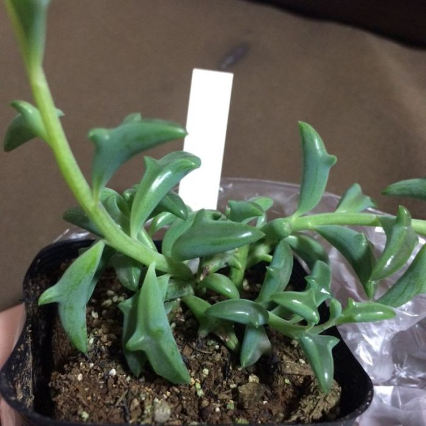

|  | |
|
|
|
|---|---|---|---|---|
| Суккуленты-дельфины (Senecio peregrinus) | Японский мох маримо (Marimo moss balls) | Неприхотливая трахиандра (Trachyandra) | Крассула умбелла (Crassula umbella) | Молочай тучный (Euphorbia obesa) |
| Научное название растения с листьями, которые напоминают дельфинов - крестовик перегринус | Зеленый шарик водоросли в японских семьях принято передавать по наследству, потому что приносит благополучие и удачу в дом. | Африканское чудо напоминает кудри волос, растущие снизу вверх. | Красивое и необычное растение, которое сотворила природа. | Экзотическое зеленоватое растение очень часто путают с кактусом, хотя колючек у него нет. |
| Нет аллергии | Нет аллергии | Может быть аллергия | Нет аллергии | |